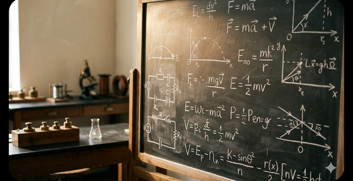
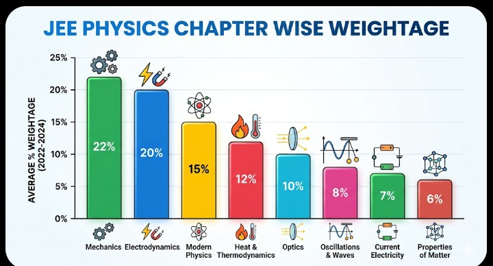
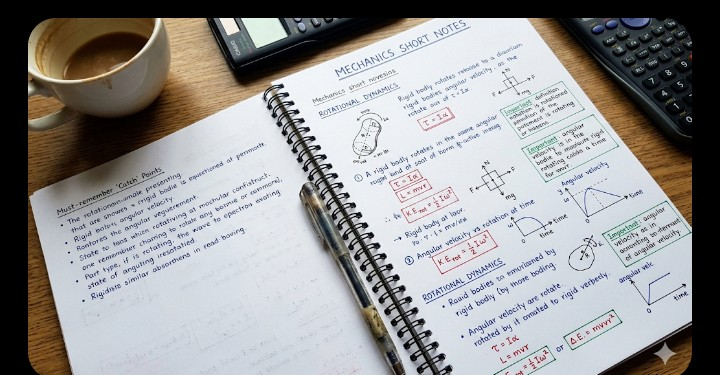

Physics is often perceived as the most challenging yet scoring section of the JEE (Joint Entrance Examination). Unlike other subjects where rote memorization might occasionally help, Physics demands a deep conceptual understanding and the ability to apply those concepts to complex, real-world problems. As we look toward JEE 2026, the competition is getting tougher, making a strategic approach indispensable.

Image Alt: physics-concept-visualization.jpg (Visualizing complex physics concepts)
The first step in your Physics journey isn't picking up a book; it's changing your mindset. Physics is the study of how the universe works. Every formula you see, from $F = ma$ to $E = mc^2$, tells a story. To master this subject, you must move beyond "formula hunting" and focus on "derivation and application."
While every chapter is important, NTA (National Testing Agency) tends to follow a pattern. Focusing on high-yield topics ensures that you secure a significant chunk of marks early on.

Image Alt: jee-physics-weightage-chart.png (Statistical breakdown of JEE Physics topics)
Start with NCERT. Many students ignore it for Physics, but for JEE Mains, NCERT definitions and back-exercise questions are gold. Once clear, move to reference books like H.C. Verma (Concepts of Physics). Read the theory carefully before jumping to problems.
Physics is learned by doing, not reading. Start with solved examples to understand the "line of thinking." Then, tackle unsolved problems. Don't check the solution immediately; give yourself at least 10-15 minutes to struggle with a tough problem.
Try to visualize the situation. If a block is sliding down an inclined plane, imagine the forces acting on it. Drawing a Free Body Diagram (FBD) is non-negotiable for Mechanics problems.
Many bright students fail to score in Physics because of these common mistakes:
Physics requires constant touch. A formula forgotten is a mark lost. Create a Short Note Diary. Every time you finish a chapter, write down the key formulas and the "catch" in specific types of problems.

Image Alt: physics-revision-notes.jpg (Sample of effective short notes for revision)
Stick to a few quality resources rather than many mediocre ones:
Success in JEE Physics 2026 is a marathon, not a sprint. Consistency is your best friend. Spend at least 2-3 hours daily on Physics, balancing theory and numericals. Remember, the goal is not just to solve the question, but to understand why a particular method was used.
Stay curious, keep practicing, and the laws of Physics will eventually work in your favor!